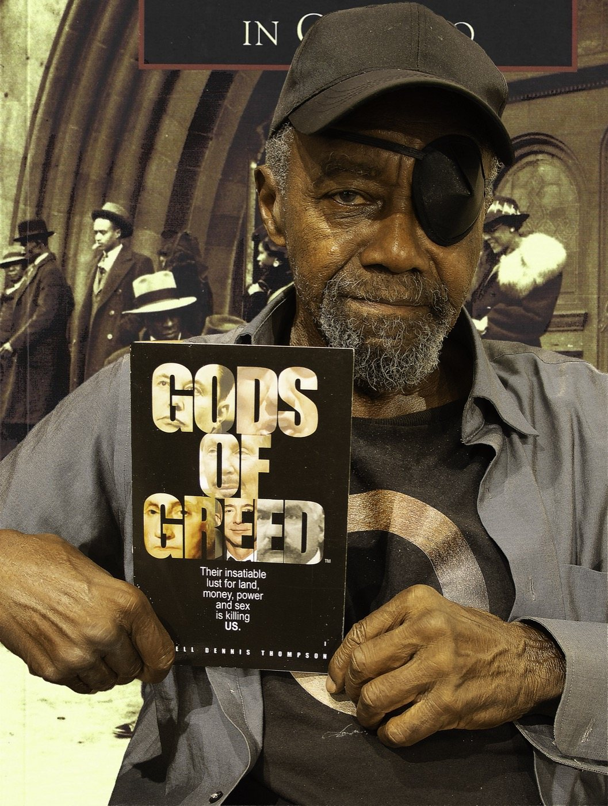
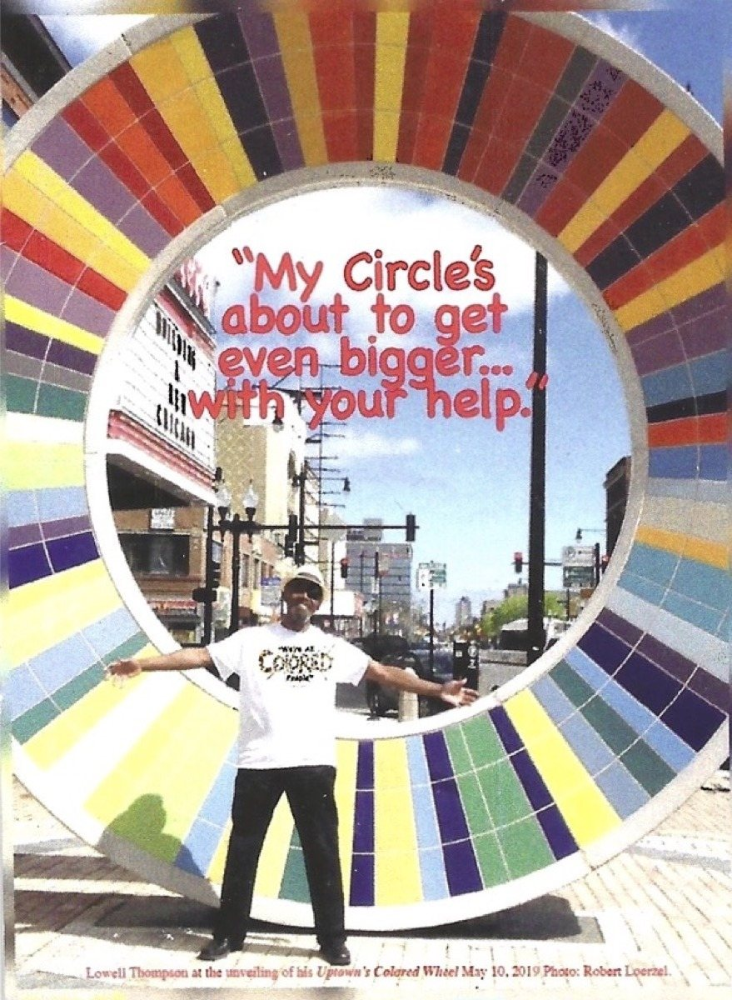
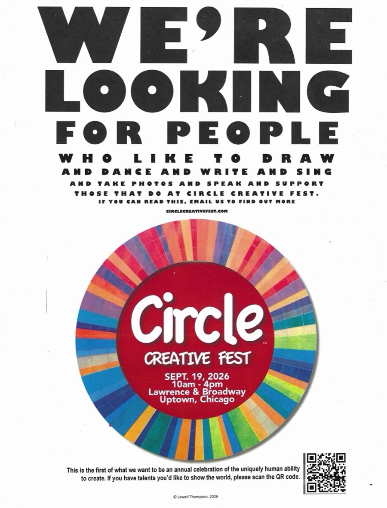
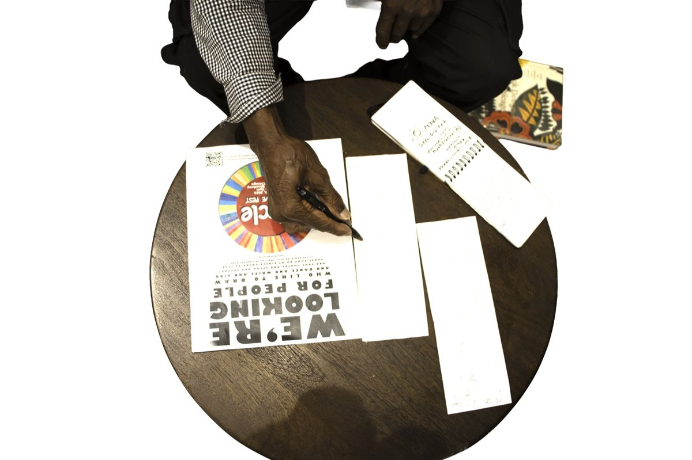
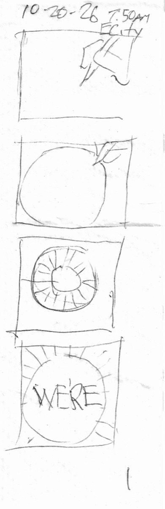
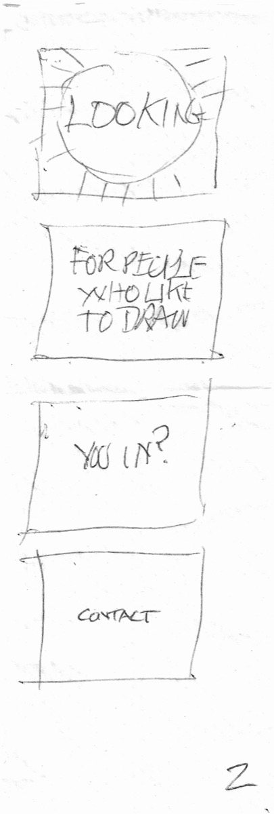
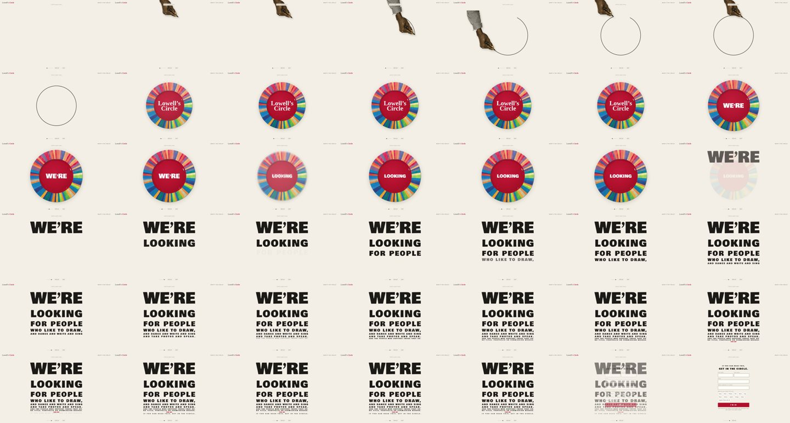
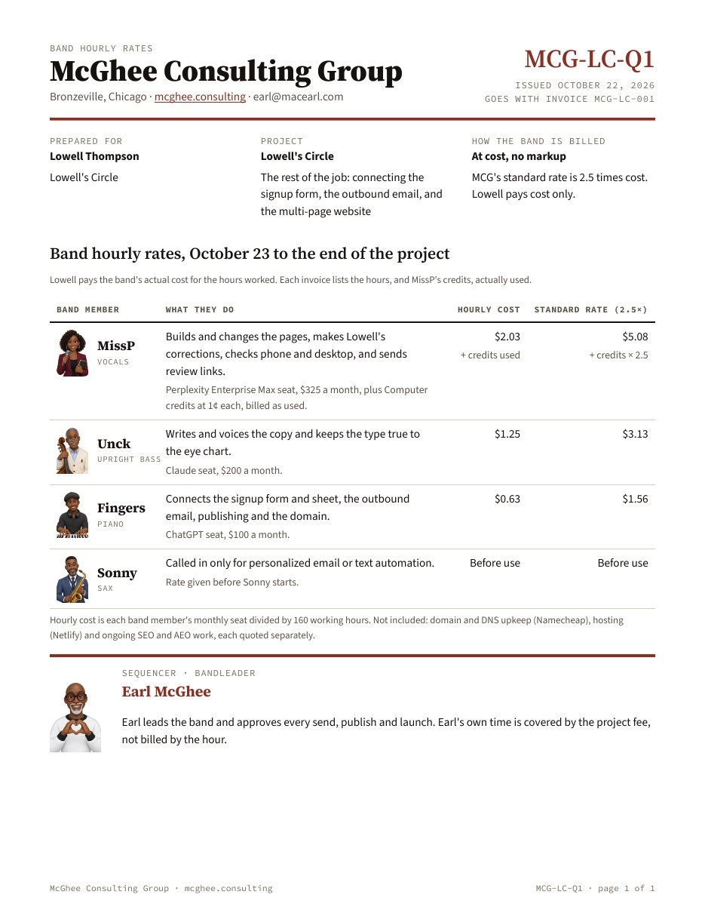

Start with what they bring
The flyer, the photo and the sketch were the brief. No one had to invent a brand.
Case study 01 · Lowell's Circle · Uptown, Chicago
A man walked in with a few loose pieces: a flyer, a photo, a sketch, a book cover, and an idea about a hand drawing a circle. Eight days later there was a working motion landing page. This is how the exchange multiplied what he brought.

The client
Lowell Thompson is a retired advertising art director and author of African Americans in Chicago, RaceMan Answers and Gods of Greed. He's also the subject of the documentary Channel Changers. His design stands 17 feet tall on the corner of Lawrence and Broadway as Uptown's Colored Wheel, which was unveiled in May 2019.
He wanted to gather creative people around that wheel for a Circle Creative Fest and a membership he calls a store of creativity. He didn't want a website lecture. He wanted something that works like a TV spot: you see it, you get curious, you click.

The five loaves
No brief, no brand book, no copy deck. Just these pieces. None of them was a website, but every one of them ended up in it.


A hand draws a circle. The circle becomes Lowell's Circle. The camera moves in. Click.
The brief, in his words
Two recorded working sessions became the brief: the Lowell Circle Project meeting on October 14 (1 hour 58 minutes) and the Barnes & Noble session on October 20 (1 hour 8 minutes). Press play to hear him say it. Quotes are lightly edited for filler words.
“Is this just another one of Lowell's crazy ideas? That's the subject.”
The spot, as he pitched it“You see my hand, got a pencil or a pen, and I'm about to draw something. Just a blank page. You see me begin to draw a circle. Then the circle transitions into my circle, Lowell's circle. And then you go tighter into the circle and you see: We're looking for people who like to draw or paint. You in? Click.”
“I'm not telling them more. All I'm doing is getting them interested enough to click.”
“I wanted it to be something that's not flat, that's not something to be read, that is something to be experienced like a TV spot.”
“I've got a 17-foot logo with my name on it... People come from all over the world to that and take pictures with that.”
“We are a meeting or membership organization of creativity for creativity, and we are an advocate for creativity, and we are a think tank for creativity, and we are a distributor of creativity, and we are an aggregator of creativity.”
“If you have an idea in you, we can get it out.”
“Any form of creativity will be welcome in Lowell Circle.”
“You want people who can't [draw] but are creative in terms of concepts. Or photographers. So this word draw needs to be... we need to work on that.”
So the page grows the list frame by frame: draw, then dance, write and sing, then take photos, speak and support. Lowell kept his spot, and the band widened the invitation.
“You can be our art director, your creative director. We'll build it over your domain. And when it's finished, it's yours.”


The napkin · 10-20-26, 7:50 AM
Before any code, the spot went down on paper: hand, empty circle, the wheel, WE'RE, LOOKING, FOR PEOPLE WHO LIKE TO DRAW, YOU IN?, CONTACT.
That sketch became the contract between Lowell's idea and the build. Every frame on paper has a matching beat on screen, so Lowell can review the motion against something he can hold in his hand.
The build · the fishes multiply
This is the live review build, not a mockup. On a phone it plays as a vertical spot. The hand draws the circle, the circle becomes the Colored Wheel, and the eye-chart lines arrive one size smaller at a time until the signup asks, "You in?"

Who did what
Lowell gives corrections and suggestions. The band does the work. Earl approves every send and every publish.
He led the meetings, kept the napkin and Lowell's voice at the center, and approved every step out the door.
Built the pages and the motion, then checked them on phone and desktop.
Wrote the copy and kept the type true to the eye chart.
Connected the signup form to Lowell's sheet and packaged the publish.
Ready for personalized email and text sends when Lowell's list goes out.
The economics
The exchange doesn't hide its machinery. Each band member's hourly cost comes from what the seat actually costs each month, divided by 160 working hours. Lowell sees the hourly cost next to a standard rate of 2.5 times cost, and he pays cost.
A flat fee plus one creative idea of his covers the landing page and the multi-page site to come. A man brought five loaves, and he gets to see exactly what the fish cost.
| Band member | Hourly cost | Standard (2.5×) |
|---|---|---|
| MissP | $2.03 + credits | $5.08 + credits × 2.5 |
| Unck | $1.25 | $3.13 |
| Fingers | $0.63 | $1.56 |
| Sonny | Rate given before use | |

What multiplied
The flyer, the photo and the sketch were the brief. No one had to invent a brand.
Eight pencil frames kept the client and the build reading the same story.
Signups land in Lowell's own sheet. The exchange builds the pipe, and Lowell owns what flows through it.
Hourly cost, shown plainly, turns a quote into a conversation instead of a negotiation.
Bring us your pieces. We'll show you what they make.
Grab a call with Earl